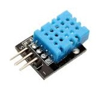
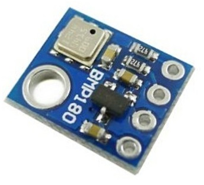
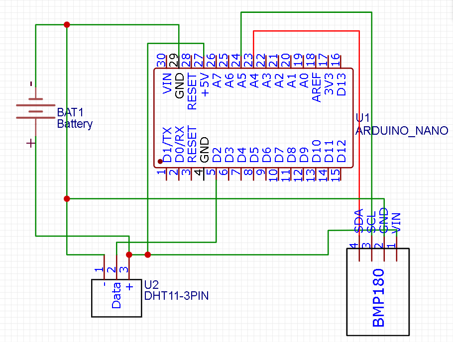

Метеостанция
Для создания метеостанции понадобится:
- Arduino nano
- DHT11(DHT22)
- батарейка питания
- Датчик давления


Принцип работы
Принцип работы метеостанции заключается в том, что данны с датчика температуры и влажности(DHT11)и датчика давления(BMP180) передаются на arduino и с ардуино выводятся в serial порт
Датчик давления подключается по протоколу I2C, датчик температуры и влажности просто подключается к свободному контакту arduino
Схема подключения:
Прогромирование
Для прогромирования на понадобится библиотека для работы с датчиком температуры и влажности и библиотека датчика давления.
Код с пояснениями:
#include <SFE_BMP180.h>
#include <Wire.h>
SFE_BMP180 pressure; // Объявляем переменную для доступа к SFE_BMP180
#include "DHT.h"
#define DHTPIN 2 // Тот самый номер пина, о котором упоминалось выше
// Одна из следующих строк закоментирована. Снимите комментарий, если подключаете датчик DHT11 к arduino
DHT dht(DHTPIN, DHT22); //Инициация датчика
//DHT dht(DHTPIN, DHT11);
void setup()
{
Serial.begin(9600); // Задаем скорость передачи данных
Serial.println("REBOOT"); // Вывод текста "Перезагрузка"
dht.begin();
if(pressure.begin()) // Инициализация датчика
Serial.println("BMP180 init success"); // Вывод текста "BMP180 подключен"
else{ // В противном случаи, датчик не подключен
Serial.println("BMP180 init fail\n\n"); // Вывод текста "BMP180 не подключен"
while(1); // Пауза.
}
}
void loop()
{
char status;
double T,P,p0,a;
/* Так как давление зависит от температуры, надо сначало узнать температуру
* Считывание температуры занимает какоето время.
* Если все хорошо, функция pressure.startTemperature вернет status с количеством милисикунд
* которые нужно подождать. Ксли какае то проблема, то функция вернет 0.
*/
status = pressure.startTemperature(); // Считывание показания
if(status!=0){ // Если значение status не 0, выполняем следующию команду.
delay(status); // Ждем
status = pressure.getTemperature(T); // Полученые показания, сохраняем в переменную T
if(status!=0){ // Если все хорошо, функция вернет 1, иначе вернет 0
Serial.print("Temperature: "); // Вывод текста "Температура"
Serial.print(T,2); // Вывод показания переменной "Т"
Serial.println(" C, "); // Вывод текста "С"
/* Определяем показания атмосферного давления
* Параметр указывает расширение, от 0 до 3 (чем больше расширение, тем больше точность, тем долше ждать)
* Если все хорошо, функция pressure.startTemperature вернет status с количеством милисикунд
* которые нужно подождать. Если какая то проблема, то функция вернет 0.
*/
status = pressure.startPressure(3); // Считывание показания
if(status!=0){ // Если значение status не 0, выполняем следующию команду.
delay(status); // Ждем
status = pressure.getPressure(P,T); // Полученные показания, сохраняем в переменную P
if(status!=0){ // Если все хорошо, функция вернет 1, иначе вернет 0
Serial.print("Absolute pressure: "); // Вывод текста "Атмосферное давление"
Serial.print(P,2); // Вывод показания переменной mBar
Serial.print(" mbar, "); // ПВывод текста "mBar"
Serial.print(P*0.7500637554192,2); // Вывод показания в mmHg
Serial.println(" mmHg");} // Вывод текста "mmHg"
else Serial.println("error retrieving pressure measurement\n");} // Ошибка получения давления
else Serial.println("error starting pressure measurement\n");} // Ошибка запуска получения давления
else Serial.println("error retrieving temperature measurement\n");} // Ошибка получения температуры
else Serial.println("error starting temperature measurement\n"); // Ошибка запуска получения температуры
float h = dht.readHumidity(); //Измеряем влажность
if (isnan(h)) { // Проверка. Если не удается считать показания, выводится «Ошибка считывания», и программа завершает работу
Serial.println("Ошибка считывания");
return;
}
Serial.print("Влажность: ");
Serial.print(h);
Serial.print(" %\t");
delay(5000); // Пауза в 5с
}